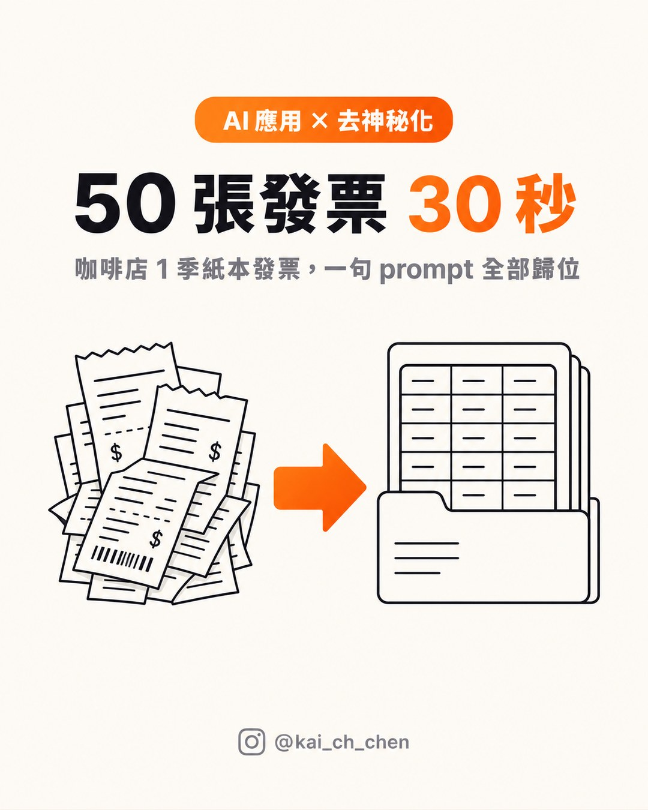
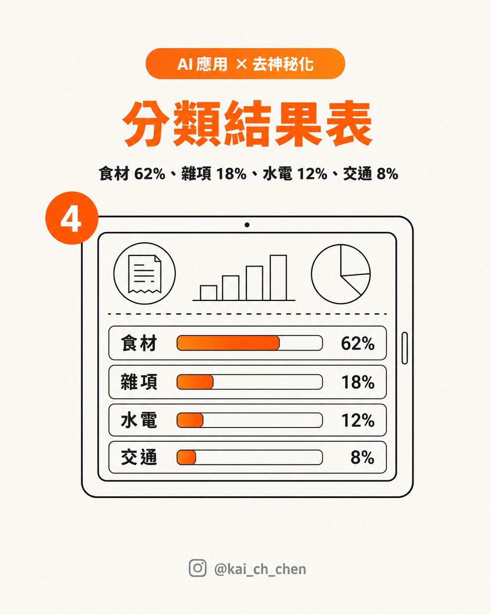
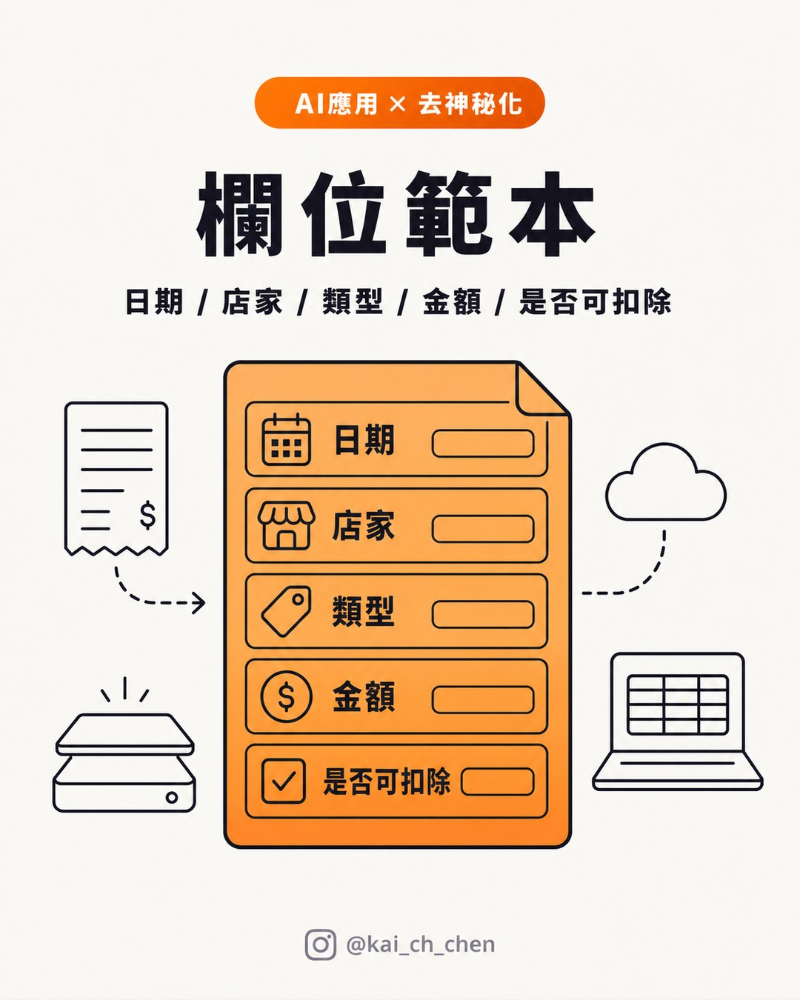

ChatGPT 發票 OCR｜小店紙本發票分類、Google Sheet 月報與稅務查核邊界
來源是 Kai Chen（@kai_ch_chen）在 Threads 分享的「小店紙本發票去神秘化」案例：把咖啡店一季累積的紙本發票用手機拍照丟給 ChatGPT，請 AI 依日期、店家類型與金額分類，再輸出成表格，最後轉進 Google Sheet 做月報。

一句話摘要
這則貼文值得保存，不是因為「AI 能替你報稅」，而是它把小店最常見的紙本發票地獄，拆成可教學的輕量工作流：拍照品質控制 → OCR / 表格化 → 人工覆核 → Google Sheet 月報；真正的稅務可扣除判斷仍要回到財政部法規、國稅局說明與會計師覆核。
Threads 可擷取資訊
| 欄位 | 內容 |
|---|---|
| 作者 | Kai Chen（@kai_ch_chen） |
| 可見時間 | 13 小時前（擷取於 2026-07-29 凌晨） |
| 可見互動 | 約 9,584 次瀏覽、98 讚、4 則回覆、6 repost/引用、128 分享/互動（頁面快照） |
| 主張 | 咖啡店 50 張紙本發票，傳統 Excel 手打約 2 小時；用手機拍照丟 ChatGPT 後，以一句 prompt 分類、加總、標示可扣除項目，再匯出 Google Sheet |
| 作者留言 prompt |「這幾張店家發票的照片，請幫我依 (1) 日期 (2) 店家類型 (食材/雜項/水電/交通) (3) 金額分類。輸出成 Markdown 表格，最後加一列各類佔比，並標出可扣除營業稅或所得稅的項目。」|
| 作者列出的資料來源 | 財政部稅務入口網、財政部臺北國稅局 |
圖片內容與 OCR 重點
1. 50 張發票 30 秒
主圖文字為「AI 應用 × 去神秘化」、「50 張發票 30 秒」、「咖啡店 1 季紙本發票，一句 prompt 全部歸位」。圖像以一疊收據轉成資料夾表格呈現，沒有可識別的真實店家或統編資訊。
2. 拍照 3 個技巧
第二張圖提示：光線正對、避開反光、單張一景，並寫到「OCR 準確率翻倍」。這裡的實務重點是：不要把多張發票疊在同一張模糊照片裡；若要降低人工覆核成本，拍照品質比 prompt 更重要。
3. 一句 prompt 的結構
第三張圖把 prompt 拆成三段任務：分類、加總、標可扣除項目。這比單純要求「幫我整理發票」更好，因為它先定義欄位與輸出格式，再讓 AI 做彙總。
4. 分類結果表

第四張圖是示意分類結果：食材 62%、雜項 18%、水電 12%、交通 8%。這些比例應視為圖卡示例，不應當成該咖啡店的實際財務數據。
5. 欄位範本

第五張圖提供欄位範本：「日期 / 店家 / 類型 / 金額 / 是否可扣除」。如果要轉成可長期維護的 Google Sheet，建議再補上「發票號碼、統編、稅額、憑證類型、付款方式、覆核狀態、原始照片檔名」等欄位。
官方查核：能做 OCR，不代表能直接判定報稅
作者留言列出財政部稅務入口網與財政部臺北國稅局，方向是對的，但貼文中的「挑出可申報營所稅扣除」應標註為 AI 初步分類，不是稅務結論。
財政部稅務入口網的營利事業所得稅 Q&A 反覆強調「核實認定」與「證明文據／原始憑證」；例如其他費用或損失要能核實認定，需具備相應證明文件。財政部臺北國稅局的營利事業所得稅常見問答，也把不同情境的所得、費用、申報與憑證要求拆開說明。因此：
- AI 可以先把紙本資料轉成表格，降低登打成本。
- AI 可以標出「可能」與營業、營所稅相關的項目，供人工檢查。
- 是否可作為營業稅進項、營利事業所得稅費用或其他扣除，仍取決於交易性質、買受人資訊、統一發票或合法憑證、公司帳務與實際用途。
- 罰單、私人消費、非營業相關支出等項目，不能只因 AI 標示就列入公司費用。
隱私與資料治理提醒
這類工作流很適合小店與微型公司，但發票、收據與罰單可能含有店家資訊、統編、付款軌跡、車號、姓名或地址。若資料屬公司帳務或客戶個資，應先決定要使用個人版 ChatGPT、ChatGPT Business / Enterprise，或本機 OCR / 企業受控環境。
OpenAI 官方資料控制與商務資料頁面說明，Business / Enterprise / Edu / API 等商務方案對 business data 有較明確的資料使用承諾；一般 ChatGPT 使用者則應留意 Data Controls、聊天紀錄、檔案上傳與模型改進設定。實務建議：
- 上傳前先遮蔽不必要的個資與非本次任務所需欄位。
- 不要把完整帳本、銀行資訊、客戶名單與個人罰單混在同一批 prompt 中。
- 要求 AI 輸出「需要人工覆核」欄，而不是只輸出結論。
- 對低信心 OCR、模糊照片、金額不一致、可扣除判斷，全部標成待覆核。
- 最終申報前交由負責人、會計或記帳士確認。
可帶走的改良版 prompt
```text
你是小型店家帳務整理助理。請從以下發票／收據照片中抽取資料，但不要做最終稅務判定。
請輸出 Markdown 表格，欄位如下：
- 日期
- 店家／供應商
- 發票或收據類型
- 發票號碼或識別碼（若看不清楚填「待覆核」）
- 類別（食材／雜項／水電／交通／設備／行銷／其他）
- 金額
- 稅額（若可見）
- 可能用途
- 可能可列報項目（請用「可能」語氣）
- OCR 信心（高／中／低）
- 需要人工覆核原因
最後請加總各類金額與占比，並列出：
- 看不清楚的照片
- 金額或日期疑似錯誤的項目
- 可能不是公司支出的項目
- 需要會計／記帳士確認的項目
```
為什麼值得放進 AI 學習雷達
這則案例非常適合課堂或小企業工作坊：它不是高門檻的 agent、自動化 API 或 ERP，而是每個小店都遇得到的紙本資料整理。AI 的價值不是「取代會計」，而是把紙本憑證變成可搜尋、可排序、可覆核的表格，讓人把時間花在判斷與合規上。
風險與限制
- 圖卡中的「30 秒」與貼文中的「3 秒」屬作者案例與社群表述，實際速度取決於照片數量、上傳時間、模型、圖片清晰度與人工覆核深度。
- OCR 會出錯，尤其是摺痕、反光、熱感紙褪色、截斷、手寫收據與多張混拍。
- AI 可做初步分類，但不應作為稅務申報依據。
- 若使用個人版雲端 AI，需先評估資料隱私與公司內控政策。
- 最後輸出到 Google Sheet 前，建議保留原始照片檔名與覆核欄位，方便追溯。
來源
- Kai Chen（@kai_ch_chen）Threads：50 張紙本發票用 ChatGPT 分類與匯出 Google Sheet。
- 財政部稅務入口網：營利事業所得稅、營業稅、統一發票與憑證相關 Q&A。
- 財政部臺北國稅局：營利事業所得稅常見問答。
- OpenAI：Business data / Enterprise privacy / Data Controls FAQ。
- Google Docs Editors Help：Google Sheets 可透過 CSV / IMPORTDATA 等方式接收結構化資料；實務上也可由 Markdown 表格轉 CSV 或直接複製貼上。